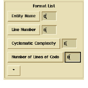
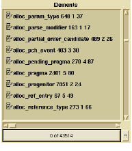

To display multiple characteristics in the resulting list
1 In the Format List region, click *.
A list of options appears.
2 Select one of the available characteristics from the cascading menu.
This adds the selected characteristic to the dialog box.
3 If necessary, select the same characteristic to change it.
When you add another characteristic, another option menu labeled * appears, enabling you to add more characteristics.
4 Repeat until all desired characteristics are visible.
The following is an example depicting some attributes of the filtered list.

5 To execute the filter, click OK.
The resulting list displays all of the visible characteristics, in the order (top to bottom) that they appear in the dialog box.
